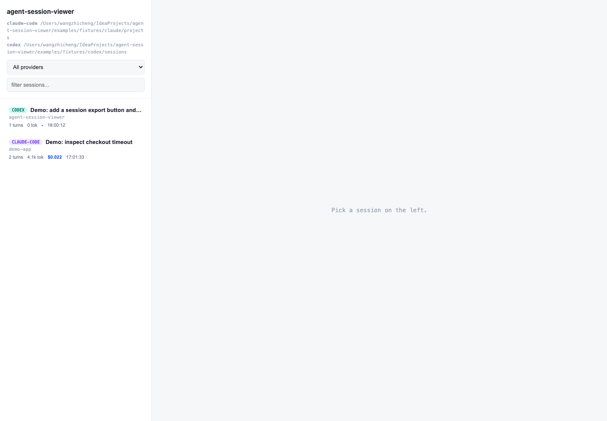

Why did this run take so long?
RunWhy turns local agent logs into duration metrics, delay segments, and root-cause hypotheses.
Stop reading raw JSONL. RunWhy shows what your coding agent did, why the run took time, where it got stuck, and which original turn proves it.

RunWhy turns local agent logs into duration metrics, delay segments, and root-cause hypotheses.
Every useful diagnosis can jump back to the original turn so you can verify the model's claim.
Read Claude Code and Codex logs directly from your machine. No telemetry, no hosted collector, no required API key.
Inspect prompts, assistant messages, reasoning summaries, tool calls, tool results, events, and attachments.
Generate a local Markdown handoff for recent Claude Code and Codex work, with redaction before sharing.
Use local metrics and optional Claude CLI analysis to explain slow runs and stalled turns.
| Tool Type | Typical Question | RunWhy Difference |
|---|---|---|
| Cost tools | How much did I spend? | RunWhy asks why the run took time and where work stalled. |
| Generic LLM observability | How is my production app tracing? | RunWhy is built for local coding agents and their JSONL session history. |
| Raw log viewers | What is inside this log? | RunWhy turns the session into replay, recap, diagnosis, and shareable evidence. |